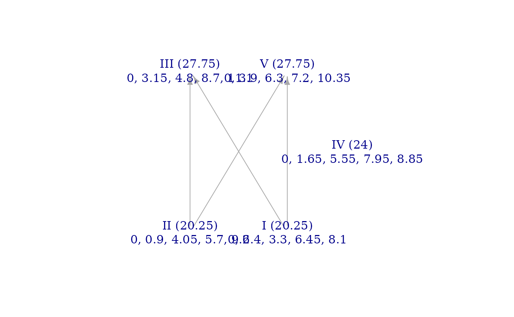

Import a Scala (.scl) file as a scale in R
readSCL.RdThis function allows you to import scales that have been defined in the Scala tuning format
(*.scl) into R to analyze with the functions of musicMCT. Scales can be defined in .scl files
in different ways, some of which may lack the precision that computations in musicMCT normally
assume. If you import a scale that seems to have less regularity than you expected (i.e. it's on 0
hyperplanes even though it seems to be very regular), try increasing your rounding tolerance (i.e. lower
the value of rounder arguments in the functions you apply to the imported scale).
Value
A numeric vector with the scale's pitches if scaleonly=TRUE; else a list
in which the scale's pitches are the first entry, the length of the scale is the second,
and the size of the period is the third.
Examples
# We'll read a sample .scl file that comes with the `musicMCT` package.
demo_filepath <- system.file("extdata", "sample_pentachord.scl", package="musicMCT")
fun_pentachord <- readSCL(demo_filepath)
sim(fun_pentachord)
#> [,1] [,2] [,3] [,4] [,5]
#> [1,] 0.00 0.00 0.00 0.00 0.00
#> [2,] 2.40 0.90 3.15 1.65 3.90
#> [3,] 3.30 4.05 4.80 5.55 6.30
#> [4,] 6.45 5.70 8.70 7.95 7.20
#> [5,] 8.10 9.60 11.10 8.85 10.35
brightnessgraph(fun_pentachord)
